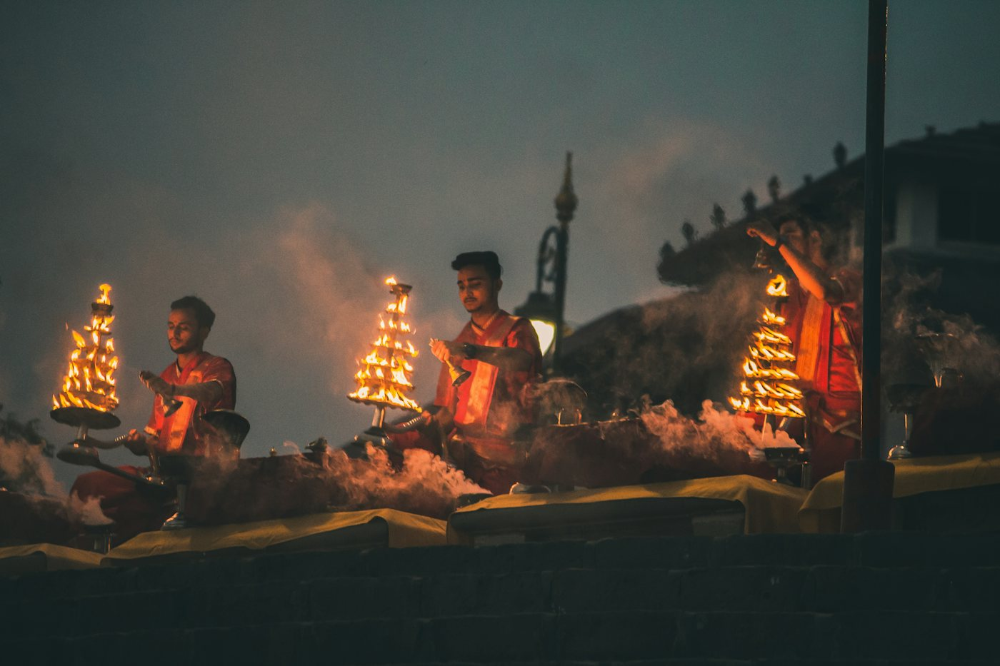
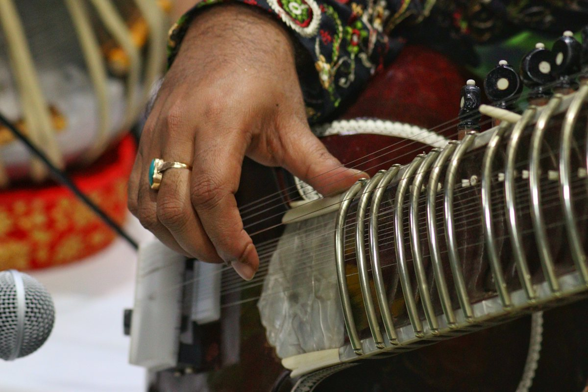
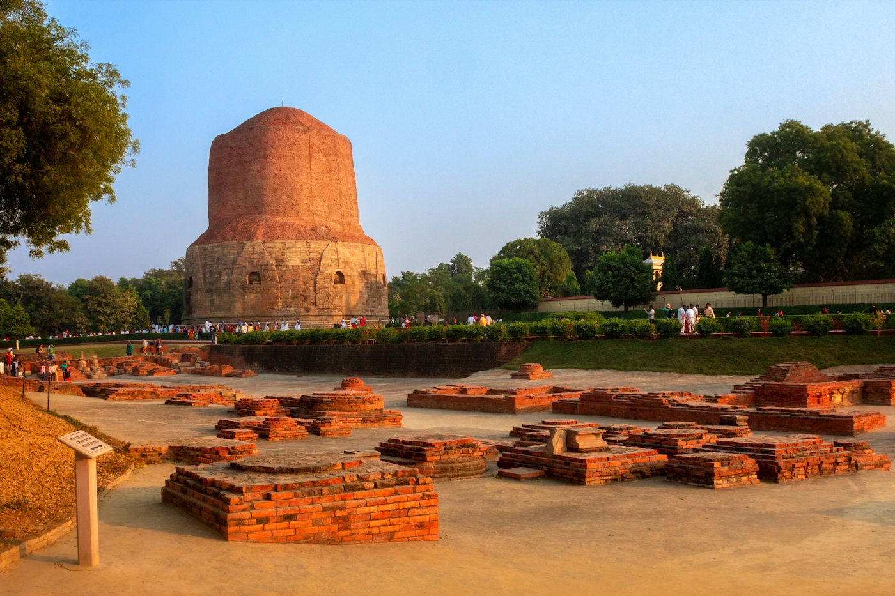
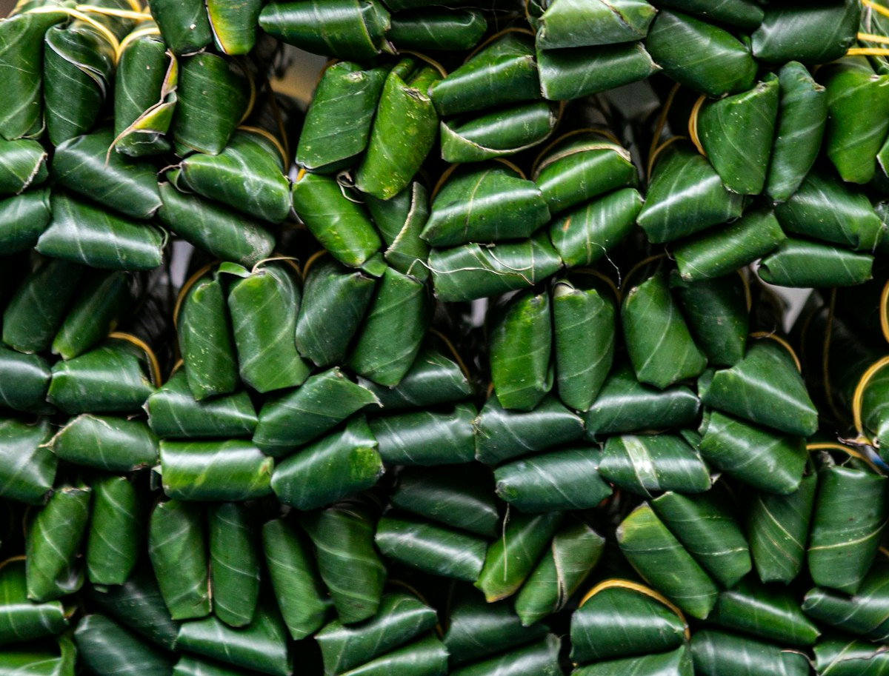
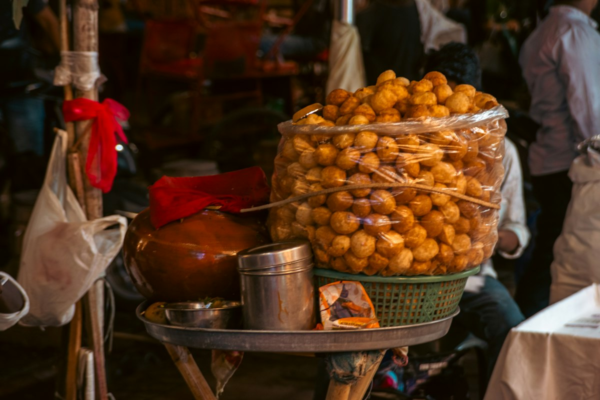
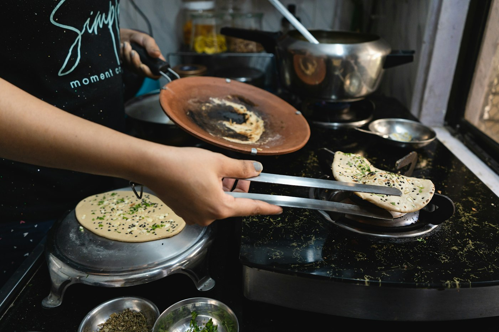
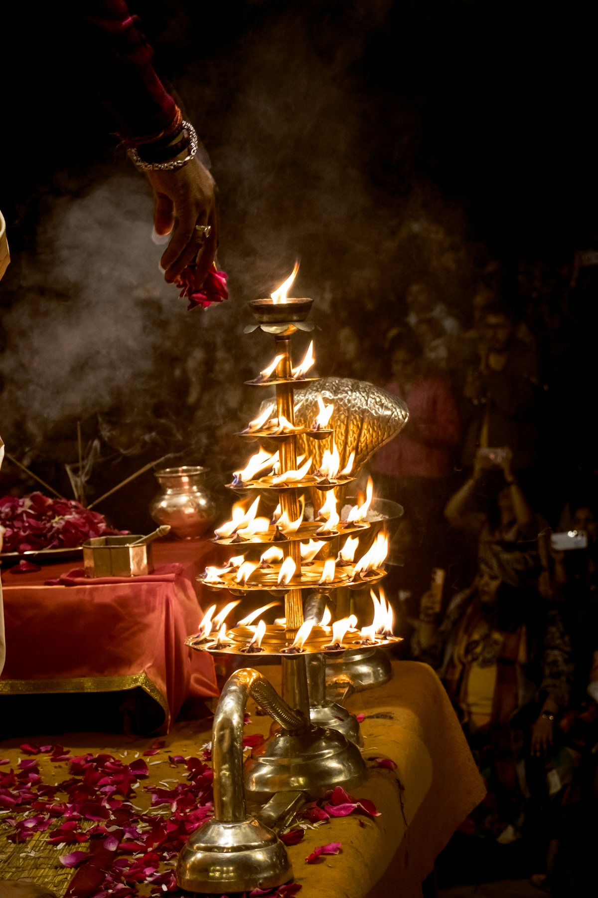
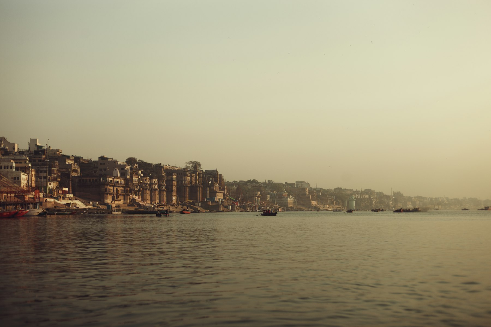

Dawn on the Ganga
Private Sunrise Boat
A wooden boat from Assi to Manikarnika, past the old ghats, with a local storyteller and kulhad chai.
Experiences
We'll take you to the Banaras we know: our boatmen, our weavers, the musicians of the Banaras Gharana, and the quiet of Sarnath.
A wooden boat from Assi to Manikarnika, past the old ghats, with a local storyteller and kulhad chai.

Good seats for the aarti, and trusted escorts for Kashi Vishwanath and Kal Bhairav.

Sit beside a master weaver in Madanpura and watch silk turn into a saree.

The morning ragas at Assi Ghat, then yoga on a quiet terrace and chai in a kulhad.

Kachori-jalebi at dawn, chaat at dusk, lassi in between, through the gallis of Chowk.

An intimate rooftop recital by musicians of the Banaras Gharana.

The Dhamek Stupa, the Ashoka Lion Capital, and quiet hours at the monasteries.
A day in Kashi
Banaras keeps its own clock. Here is a day as we'd spend it with you, hour by hour.
4:45 am · Brahma muhurta
Temple bells start in the dark. At Assi, Subah-e-Banaras begins with Vedic chants, a morning raga and the aarti, while the sky turns from indigo to rose.
6:15 am · Sunrise
A wooden boat drifts downstream from Assi. Pilgrims bathe, the dhobis begin their washing, and the first light turns the sandstone gold.
8:30 am · Nashta
Breakfast is eaten standing up in the galis: puffed kachoris with spicy aloo, jalebi straight from the kadhai, and a kulhad of chai to finish.
11:00 am · At the loom
In Madanpura and Sarai Mohana, the rhythm of the looms carries into the lanes. Sit with a weaver while a single motif grows, one thread at a time.

3:00 pm · Sarnath
Drive out to Sarnath, where the Buddha gave his first sermon. Sit under the trees by the Dhamek Stupa while the afternoon goes quiet.

5:30 pm · Godhuli
As the light softens, Godowlia fills up. Tamatar chaat in a leaf bowl, sweet, sour and smoky, is how Banaras says the working day is done.
After sunset · Aarti
Bells, conch shells and great brass lamps at Dashashwamedh. The aarti begins soon after sunset, which today in Banaras is at dusk.
9:00 pm · Baithak
A small gathering, a sitar and a tabla, the river dark below. Music is how Banaras ends its day, as it has for centuries.

10:30 pm · Paan
A betel leaf folded around gulkand, fennel and a little katha. Every Banarasi has their own paanwala, and no evening is complete without a stop there.
Plan a day like thisBanarasi Khana
Banaras eats by the season and by the hour. Here's what we'd put in front of you, and when.
Read the full Varanasi food guide →

In season now in Banaras: kachori, chaat and paan, as always.

Cook with us
Spend a morning in a family kitchen in the old city. Buy vegetables at the market, roll kachoris, cook tamatar chaat and aloo sabzi together, then sit down to eat the meal you made.
The festival year
Banaras celebrates something almost every week. These are the days we'd plan a whole trip around. Dates follow the Hindu calendar and move every year, so write to us for this year's dates.
The full festival calendar →Phalgun · Tulsi Ghat
Several nights of dhrupad, India's oldest surviving classical form, sung on the stone steps of Tulsi Ghat.
Plan around this →
Phalgun · Feb – Mar
Kashi is Shiva's own city, and this is his night. Processions, all-night prayers at Kashi Vishwanath, and nobody sleeps.
Plan around this →
Phalgun · March
It starts days early, when gulal flies at Kashi Vishwanath on Rangbhari Ekadashi, then spills into every ghat and gali.
Plan around this →Chaitra · Sankat Mochan
For nearly a week around Hanuman Jayanti, India's great musicians play through the night in the temple courtyard, free and open to all.
Plan around this →Vaishakh · Sarnath
Monks and pilgrims from across Asia gather at Sarnath to remember the Buddha's birth, awakening and passing.
Plan around this →Jyeshtha · May – June
The day the Ganga is said to have come down to earth. Bathers fill the ghats at dawn, and lamps float on the river at dusk.
Plan around this →About a month · Ramnagar
The Ramayana performed across the town of Ramnagar for about a month, as it has been for nearly two centuries, with the Kashi Naresh in attendance.
Plan around this →Day after Dussehra · Nati Imli
Huge crowds gather at Nati Imli to watch Ram embrace his brother Bharat after fourteen years. One of the city's best-loved days.
Plan around this →Kartik · Tulsi Ghat
For one evening the Ganga becomes the Yamuna, as a young Krishna leaps in to subdue the serpent Kaliya, watched from the packed ghats.
Plan around this →
Kartik Purnima · November
Fifteen days after Diwali, the gods are said to come down to bathe, and every ghat is lit with lakhs of diyas. Book months ahead.
Plan around this →Along the river
From Assi in the south to Raj Ghat in the north, the steps run for nearly seven kilometres. These are the ones we stop at, walking north with the river.
Where the little Assi stream meets the Ganga. Mornings begin here with Subah-e-Banaras.
View on map ↗Where Tulsidas is said to have written much of the Ramcharitmanas. Home to Nag Nathaiya and the Dhrupad Mela.
View on map ↗A riverside fort where Raja Chet Singh fought the forces of Warren Hastings in 1781.
View on map ↗A grand sandstone palace built by the Darbhanga royals, one of the most striking facades on the river.
View on map ↗Where Brahma is said to have performed ten horse sacrifices. The evening aarti happens here.
View on map ↗Raja Man Singh's palace, with an 18th-century observatory built on its roof by Sawai Jai Singh II.
View on map ↗The great cremation ghat, where the fires are said never to go out. We pass quietly, and we don't take photographs here.
View on map ↗Its Shiva temple sank into the riverbed as it was being built, and still leans half under the water.
View on map ↗Where five rivers are said to meet. In the month of Kartik, its tall lamp towers are lit every evening.
View on map ↗Sarnath · सारनाथ
About ten kilometres from the ghats, in a deer park then called Isipatana, the Buddha gave his first sermon to five companions. It set the Wheel of Dharma turning, and pilgrims have come here ever since.
Sawasdee · Yōkoso · Hwanyeong · Āyubōwan · Tashi delek
We welcome pilgrims from Thailand, Japan, Korea, Sri Lanka, Bhutan and beyond, and arrange monastery visits, meditation sessions and guides who know the sutras.
Plan a Sarnath pilgrimageVoices of Banaras
पोथी पढ़ि पढ़ि जग मुआ, पंडित भया न कोय।
ढाई आखर प्रेम का, पढ़े सो पंडित होय॥
The whole world read books and died, and none became wise.
Whoever reads the two and a half letters of prem, love, is wise.
16th century
Is said to have written much of the Ramcharitmanas at the ghat that carries his name. The Ramlila of Ramnagar still follows his verses.
1827
Passed through on his way to Calcutta and wrote Chiragh-e-Dair, “The Lamp of the Temple”, a Persian poem in praise of Banaras.
1880 – 1936
Born in Lamhi, a village just outside the city, he wrote the lives of ordinary people into Hindi and Urdu literature.
1916 – 2006
Played his shehnai at the temples and ghats of Banaras for decades, and never agreed to leave the city, or its Ganga, for anywhere else.
1920 – 2012
Born in Banaras, he carried the sitar and the ragas of India to concert halls around the world.
1929 – 2017
The “Queen of Thumri”, who took the Banaras gharana's songs of longing and monsoon to stages everywhere.
“Benares is older than history, older than tradition, older even than legend, and looks twice as old as all of them put together.”
The Journal
What our weavers and hosts would tell you over a cup of chai.
October to March is the most pleasant, with misty winter mornings and malaiyo in the lanes. Dev Deepawali and Mahashivratri are unforgettable, so write to us early for both. Summers are hot, but bring mangoes, lassi and the Sankat Mochan music festival.
Dress modestly and take your shoes off where others do. Ask before photographing people, and never photograph at Manikarnika or Harishchandra, the cremation ghats. Phones and bags aren't allowed inside Kashi Vishwanath, so we'll arrange a locker.
The galis are too narrow for cars, so the best way is on foot, with an e-rickshaw to the edge of the old city. The river is the easiest road of all: a boat between ghats is faster than any lane.
Longer reads

बनारस शहर नहीं, एक एहसास है।
Banaras isn't a city. It's a feeling.
Say Namaste
Whether it's a bridal saree, a week in Kashi or a jar from the farm, write to us. Someone from our family in Banaras will reply.